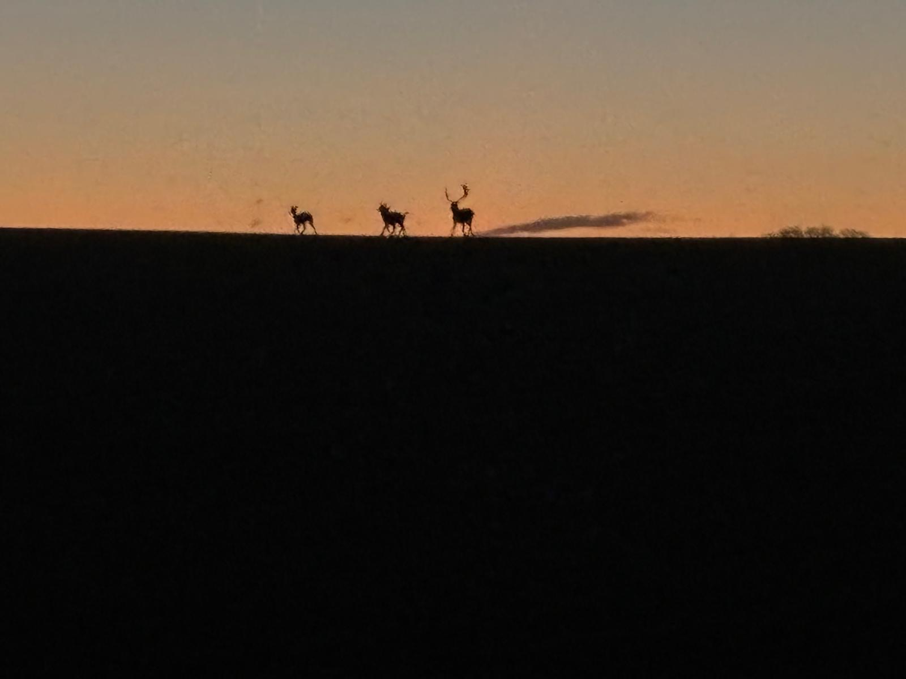

A Retreat from the Modern World
In just one hour on the train, direct from Liverpool St with a short hop at the other end, you find yourself in the fields and woods just south of Cambridge, feeling like you’ve stepped out of the modern world. Meads Cabin, with a long veranda where the hot tub sits calls you home to its quiet spot backed by the trees. Inside, farm tool curtain poles, a wood burner and natural tones keep the rustic theme going with a light touch, while a welcome hamper stuffed with local produce gives you a delicious tasting tour of the area. For a more direct experience of this part of the world, hire the e-bikes on site and zip around to the Barley Stores for supplies, Compass Courtyard for some great artisanal shops or a stately visit to Audley End House and Gardens. Alternatively, settle into the cabin and let the entertainment come to you, with deer, badgers, foxes and all sorts of birdlife to spot, while the occasional trundle of a tractor nearby reminds you that you’re in farming country and blissfully far, conceptually at least, from the city.
Not suitable for children. Not suitable for pets.

Meet Stuart and Beccy
Stuart grew up at The Meads and, as his father still lives in the farmhouse, him and Beccy are about to start converting one of the barns to live in themselves. While they’re only an hour away from London, they think it feels like stepping back in time and wanted to share that sensation with others, providing a retreat from modern life.
The cabin has been on the farm for years and finally they have breathed new life into it, enjoying the challenge of re-using old items reclaimed from the barns and putting thought into how they could repurpose things rather than buying new. They felt it important to install a log-burner and a wood-fired hot-tub, as they have their own extensive supply of logs coppiced from the farm's woodland. Eco-friendly cleaning products are used throughout in the cabin, and 'green' bathroom toiletries and toilet roll are provided.

Wildlife and environment
The land has been farmed by Stuart's family for around 80 years and comprises gently rolling fields growing a mix of wheat, barley, beans, peas and rapeseed. Herds of deer are often spotted around the fields and woodland as are badgers, hares and pheasants, and the surrounding hedgerows (more planting is planned) are rich with native birds.